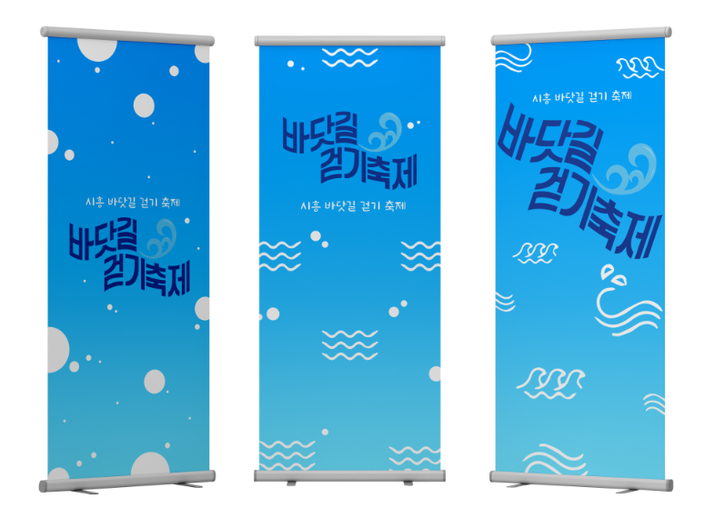
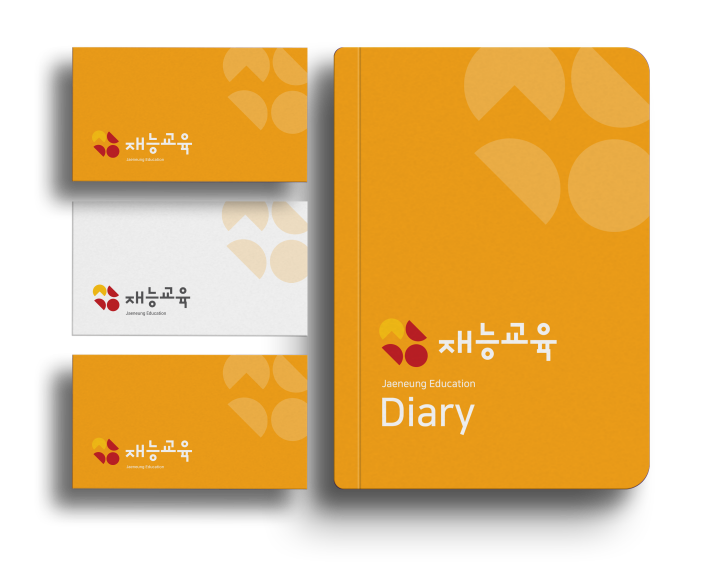
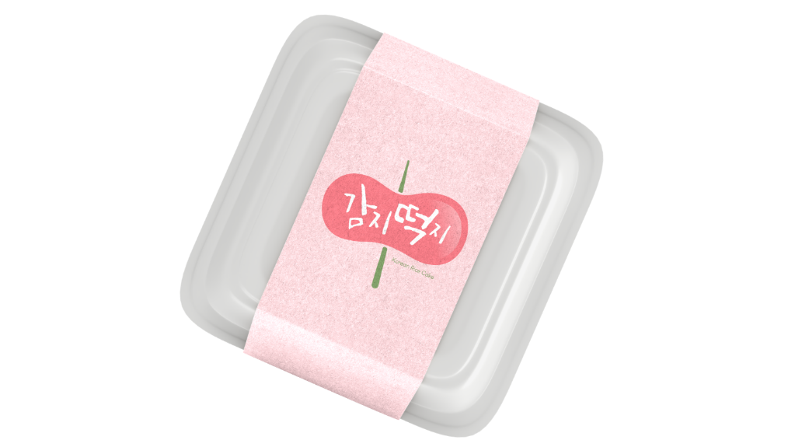

기초 화장품 브랜드 'SITA (시타)'의 BI를 리디자인 했다.
SITA의 A에 물방울 형태를 결합시켜 수분크림 같은 깨끗하고
맑은 이미지를 나타내어 기초 화장품 브랜드임을 강조하고자 했다.
헤어 전문 기업 제이숲의 CI를 리디자인했다. 헤어 제품 전문 기업이라는
특징을 J에 담아 찰랑거리는듯한 윤기나는 머릿결의 형태를 표현했다.
바닷길을 따라 걸으며 운동회 형식으로 진행되는 활동적인 시흥시의 지역
축제이다. 스포티한 축제의 느낌을 살려 역동적인 파도 형태를 나타내었다.


재능교육의 학습지 상품 '생각하는 피자'의 피자 원형을 토대로 조각이 잘려나간 형태로
재능교육의 초성 'ㅈㄴㄱㅇ'을 나타내었다. 기존의 딱딱하고 고전적인 분위기에서 더
가볍고 밝은 분위기로 어렵지 않고 재미있는 창의적인 교육 기업임을 전달하고자 했다.

부안군 진서면에 위치한 명소 ‘내소사’를 형상화했다. 부안의 ‘ㅂ’을 연상
시키는 형태로 기와 지붕을 표현했고, 주황색과 노란색 그라데이션으로
노을의 고장 부안군을 표현하여 지역의 아이덴티티를 나타냈다.
사자성어 '감지덕지'를 응용하여, 감사한 맛의 떡이라는 의미를 담았다.
말랑말랑한 찹쌀떡의 촉감을 꼬치를 꽂아 일그러진 떡 모양으로 표현했다.
떡 덩어리에 그라데이션으로 광택을 추가해 먹음직스러운 떡을 표현했다.
